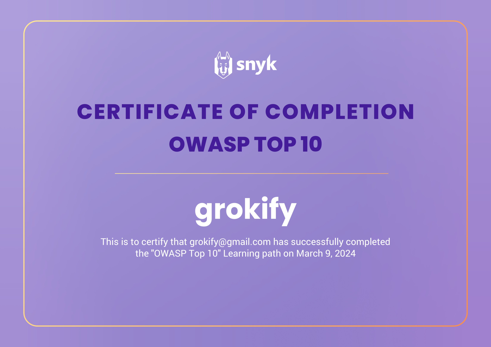
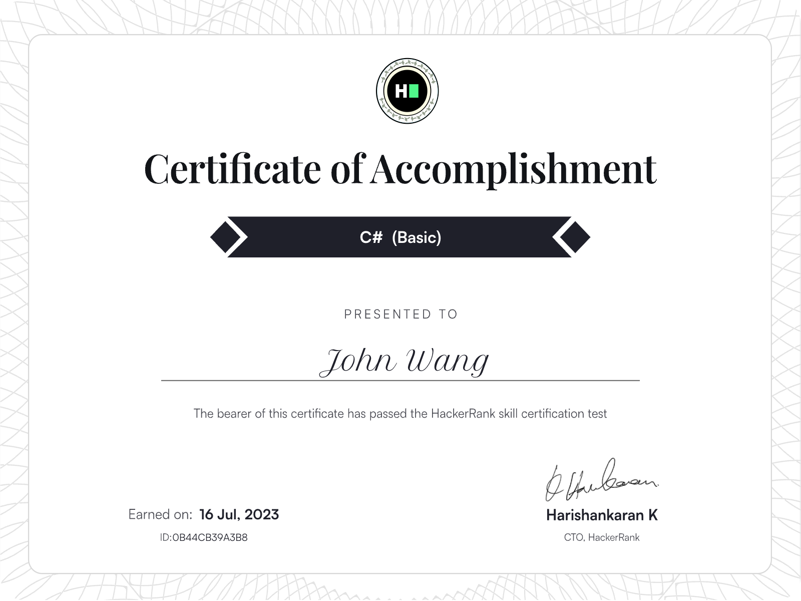

John's Programming Certificates
- Fundamentals
- Algorithms
- API
- Artificial Intelligence: ML
- Refactoring
- Security
- OAuth 2.0 and OpenID Connect (OIDC)
- C#
- Go
- Java
- Python
- SQL
- Front-End
- Salesforce
Fundamentals (1)
Software Design Principles from Codecademy

Algorithms (1)
Problem Solving (Basic) from HackerRank

API (1)
Rest API (Intermediate) from HackerRank

Artificial Intelligence: ML (1)
Machine Learning from Stanford by Andrew Ng

Refactoring (1)
ICAgile (ICP-PRG): Improving and Refactoring Code from Pluralsight by Jeremy Jarrell
Security (6)
OWASP Top 10: Broken Access Control from Codecademy

OWASP Top 10: Identification and Authentication Failures from Codecademy
Learn about CSRF Attacks from Codecademy

OWASP Top 10 from Snyk

Snyk Top 10 from Snyk

Security for Developers from Snyk

OAuth 2.0 and OpenID Connect (OIDC) (2)
Introduction to OAuth 2.0 and OpenID Connect from Pragmatic Web Security by Dr. Philippe De Ryck

OAuth2 and OpenID Connect: Easy Now from Pluralsight by Roland Guijt

C# (1)
C# (Basic) from HackerRank


Go (3)
Go (Basic) from HackerRank

Concurrency in Go from University of California, Irvine by Ian Harris

Concurrent Programming in Go from Pluralsight by Mike Van Sickle
Java (2)
Java Performance Tuning from Pluralsight by Tim Ojo
Refactoring to SOLID Java from Pluralsight by Dan Geabunea
Python (1)
Python (Basic) from HackerRank

SQL (3)
SQL (Advanced) from HackerRank

SQL (Intermediate) from HackerRank

SQL (Basic) from HackerRank

Front-End (3)
React 18: The Big Picture from Pluralsight by Cory House
Next.js 12: The Big Picture from Pluralsight by Cory House

Learn Svelte from Scrimba by Noah Kaufman